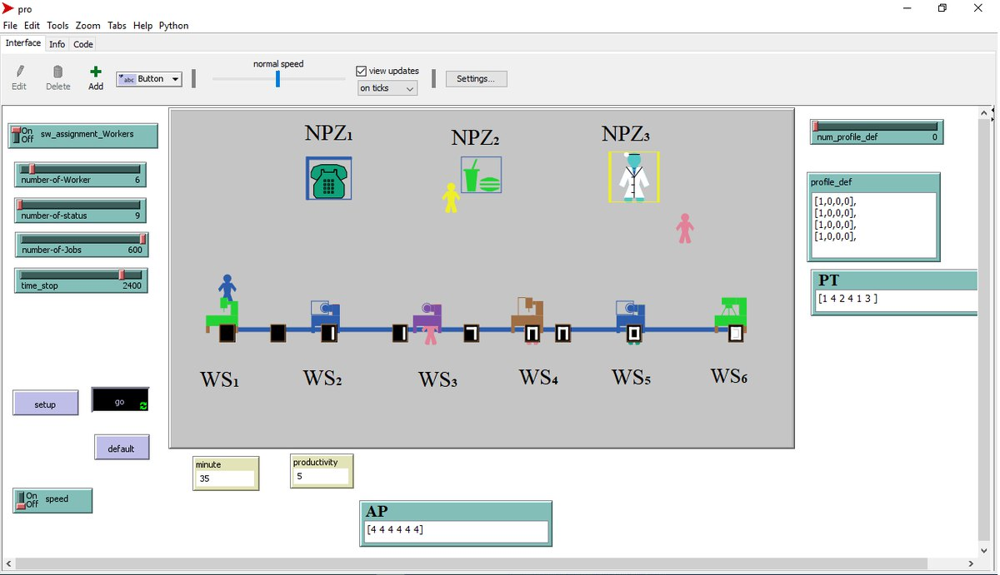
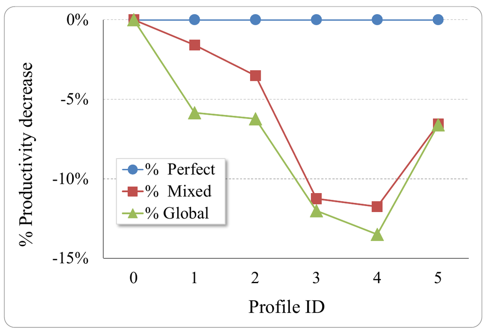
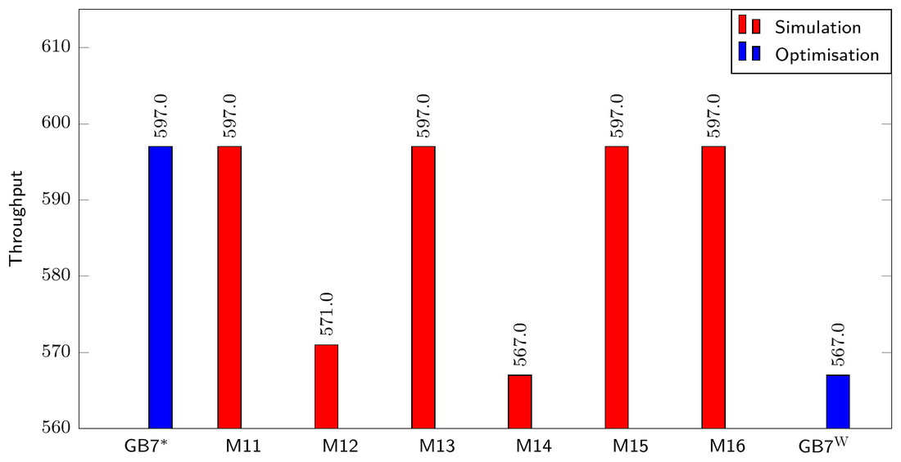
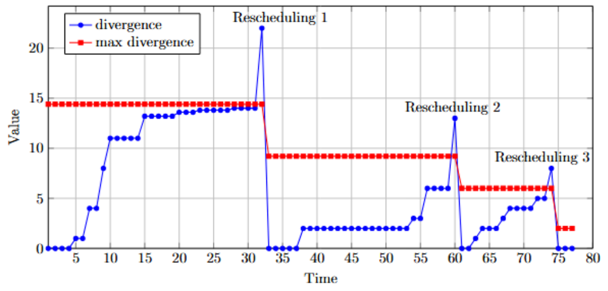
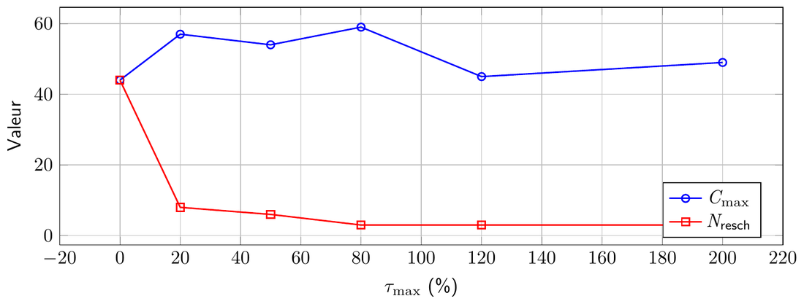

Doctorat — l'incertitude du comportement humain dans l'ordonnancement
Avril 2022 – avril 2025 · Soutenue le 25 juin 2025, grade décerné à l'unanimité du jury
CESI LINEACT et Arts et Métiers (HESAM Université) · projet AntiHpert, RIN Tremplin 2019
Thèse : « Ordonnancement dynamique prédictif d'atelier de production flexible sous incertitude du comportement humain » · dirigée par M'hammed Sahnoun et Adnan Yassine, co-encadrée par Belgacem Bettayeb
Le point de départ
La plupart des modèles d'ordonnancement traitent les opérateurs comme des machines : toujours présents, toujours à la même vitesse. Un atelier réel ne fonctionne pas ainsi. Les gens arrivent, s'absentent, se déplacent, fatiguent en fin de poste, vont plus vite sur une tâche qu'ils répètent, et plus lentement sur une tâche qu'ils n'ont pas faite depuis des semaines.
Un planning calculé sans cette variabilité est optimal sur le papier et faux dès la première heure. La thèse pose donc une question : comment intégrer formellement la variabilité et l'incertitude du comportement humain dans l'ordonnancement et la simulation des systèmes de production flexibles ?
Ce que dit la littérature
Avant de proposer un modèle de plus, j'ai mené une revue systématique des modèles mathématiques du comportement humain en gestion de production.
994références examinées : 980 par requête, 14 par boule de neige
148retenues après le filtre « humain » et « industrie »
41analysées en détail : celles qui proposent un modèle mathématique
Figure 1 — Part des 41 articles qui modélisent chaque facteur ; un article peut en traiter plusieurs. La ponctualité, point de départ de la thèse, est parmi les moins étudiées.
Le constat est net : près des deux tiers des modèles visent la productivité, un quart le bien-être des opérateurs. Ils sont le plus souvent déterministes, traitent les facteurs un par un, optimisent un seul objectif et sont rarement validés sur des données de terrain. Chaque article utilise en outre ses propres notations, ce qui rend les comparaisons difficiles.
Un métamodèle pour s'y retrouver
Pour classer et comparer ces travaux, j'ai proposé un métamodèle, HBM, qui décrit tout modèle de comportement humain par quatre dimensions.
Figure 2 — Le métamodèle HBM : quatre dimensions suffisent à situer un modèle parmi les autres.
Modéliser la présence au poste
La ponctualité d'un opérateur n'est pas une constante, c'est un processus. Je l'ai représentée par une chaîne de Markov à quatre états : le poste de travail et trois zones non productives, comme la pause ou le repas. Chaque profil d'opérateur est une matrice de seize probabilités de passage d'un état à l'autre.
Figure 3 — Chaque flèche porte une probabilité, estimée à partir des déplacements observés : le rapport entre le nombre de passages d'un état à un autre et le nombre total de départs de cet état.
Ces matrices ne sont pas postulées : elles sont extraites des enregistrements du dispositif de collecte, qui horodate chaque passage d'un opérateur d'une zone à l'autre.
Mesurer l'effet en simulation
Pour mesurer ce que la ponctualité coûte à la production, j'ai développé sous NetLogo un simulateur multi-agents d'un flow-shop à six postes et trois zones non productives. Les agents sont les opérateurs, les pièces, les postes et les zones ; chaque opérateur se déplace selon la matrice de son profil.

Figure 4 — Le simulateur : six postes (WS1 à WS6) en ligne, trois zones non productives (NPZ1 à NPZ3) au-dessus.
36scénarios d'affectation de profils aux postes
6profils d'opérateurs, dont un profil idéal toujours au poste
5 × 8 hhorizon simulé : une semaine de cinq jours

Figure 5 — Baisse de productivité selon le profil. « Global » : le profil est donné à tous les postes ; « Mixed » : à un seul. La baisse atteint environ 13 %.
Décider : qui placer à quel poste
Si le comportement des opérateurs change le débit, alors leur placement est un levier. J'ai formulé un modèle non linéaire en nombres entiers (MINLP) qui affecte les profils aux postes et ordonnance les produits en maximisant le débit. Il est résolu avec Gurobi et SCIP sous Julia. La non-linéarité vient du comportement lui-même : le temps réellement passé sur une pièce dépend des périodes de présence et d'absence de celui qui la fait.

Figure 6 — Le même opérateur moins ponctuel, placé tour à tour à chacun des six postes (M11 à M16). À quatre postes, le débit reste à 597 ; aux deux postes les plus lents, il tombe à 571 et 567. En bleu : la meilleure et la pire affectation trouvées par l'optimisation.
Autrement dit, la même personne ne coûte rien à la production à un endroit et plusieurs points de débit à un autre. Sur l'ensemble des compositions d'équipe testées, l'écart entre la meilleure et la pire affectation va de 0 à 11,4 %.
Au-delà de la ponctualité
La ponctualité n'explique pas tout : un opérateur présent peut être lent, un débutant n'est pas un expert, une cadence décline au fil du poste. J'ai donc enrichi les profils par trois effets qui modifient la vitesse dans le temps.
Figure 7 — Allures qualitatives des trois effets. La fatigue suit une croissance exponentielle avec récupération en pause (d'après Jaber, 2013) ; l'expérience suit une courbe logistique, diminuée par l'oubli pendant l'inactivité (d'après Plaza, 2010).
Les trois effets ne sont pas indépendants : la fatigue dégrade la ponctualité, l'expérience en atténue l'effet, et la vitesse de production résulte des deux. Les faire vivre ensemble dans une simulation, tout en laissant un solveur intervenir, demandait de piloter NetLogo depuis Python : c'est ce qui a donné naissance à la bibliothèque Netlogopy.
Simuler, optimiser, recommencer
Les deux briques sont enfin mises en boucle. Le planning optimal est joué dans le simulateur ; à chaque instant, un indicateur de divergence additionne les retards des fins de tâches réelles sur les fins planifiées. Quand il dépasse un seuil, une réoptimisation repart de l'état courant de l'atelier, avec les vitesses mises à jour des opérateurs et les produits restant à faire.
Figure 8 — Le planning n'est pas calculé une fois pour toutes : il est confronté à une exécution simulée et recalculé quand la réalité s'en éloigne trop.

Figure 9 — Une exécution simulée : la divergence (en bleu) monte jusqu'au seuil (en rouge), déclenche un réordonnancement, et repart de zéro. Trois réordonnancements suffisent ici.

Figure 10 — Le réglage du seuil. À seuil nul, la moindre dérive déclenche un recalcul : une quarantaine au total. Dès 20 %, moins de dix suffisent. En bleu, la durée totale du planning obtenu.
Les figures 4, 5, 6, 9 et 10 sont tirées du support de soutenance.
Ce que la thèse apporte
Le métamodèle HBM, un cadre unifié pour classer les modèles de comportement humain.
Une modélisation stochastique de la ponctualité par chaînes de Markov, estimées sur des observations.
Un modèle multi-facteurs qui réunit ponctualité, fatigue et expérience.
Un ordonnancement dynamique qui s'adapte aux écarts entre le plan et son exécution.
Le dispositif de collecte et le jeu de données FrogsNBots, et la bibliothèque open source Netlogopy.
De l'enseignement en recherche opérationnelle et en théorie des graphes, et l'encadrement de projets étudiants.
Publications issues de la thèse
Les données d'observation portent sur des personnes filmées en atelier. Elles ne sont pas publiées ici : seuls les modèles, les méthodes et les résultats agrégés le sont.
Chaînes de MarkovSimulation multi-agentsMINLPGurobiSCIPJuliaNetLogoFacteurs humains